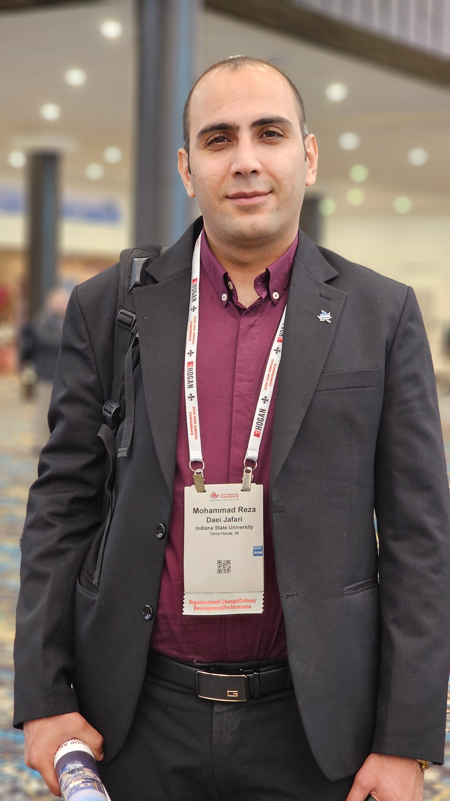

BOOK 01
Published Book
Book information, cover, description, and purchase or publisher link can be added here.
PublishedHIGHER EDUCATION • I-O PSYCHOLOGY • ORGANIZATIONAL BEHAVIOR
Researcher, writer, and higher-education professional exploring the intersection of people, organizations, technology, and learning.
01 — ABOUT ME

I am Mohammad Reza Daei Jafari, a PhD student in Higher Education Leadership at Indiana State University, with a background in I-O psychology, organizational behavior, and management.
This website is more than an academic profile. It is my personal space for sharing research, public-facing writing, conversations, media, professional experiences, and the interests that shape how I think.
My work increasingly focuses on how psychological and organizational perspectives can help us understand people at work, leadership, employee experience, technology, and the changing world of higher education.
02 — DAILY INSIGHTS
A growing collection of public-facing articles, reflections, and short pieces — similar to the kind of writing I share on LinkedIn.
03 — RESEARCH
Research interests across organizational behavior, I-O psychology, higher education, technology, and employee experience.
Exploring the psychological roles of meaningful work and resilience among remote startup employees, drawing on Job Demands–Resources and Conservation of Resources perspectives.
View research profile →Employee experience, behavior, culture, leadership, and performance.
Psychology at work in digitally connected and changing organizations.
Leadership, organizational systems, student support, and institutional effectiveness.
04 — BOOKS
A dedicated place for published books and future long-form projects.
Book information, cover, description, and purchase or publisher link can be added here.
PublishedA second space for a published title, with a short description and external link.
PublishedThe two book cards are intentionally editable placeholders until you provide the exact titles, cover images, and links.
05 — MEDIA
Weekly media can live here alongside a simple archive, so the site grows with your personal brand.
Embed your latest podcast episode here or connect a podcast platform.
Add podcast link →Share short explainers, conversations, conference reflections, and personal videos.
Add YouTube channel →06 — CONFERENCES
A living record of conferences, presentations, professional events, and future appearances.
Conference participation, presentations, networking, and reflections will be added here as the archive grows.
ResearchGate →07 — MY INTERESTS
A personal section for interests, hobbies, travel, photography, everyday observations, and the things that make life interesting.
People, places, moments, and visual stories.
Exploring cities, campuses, cultures, and new environments.
Books, ideas, conversations, and subjects outside my immediate field.
Personal reflections and the experiences that shape my perspective.
08 — CV
Keep the personal website human. Keep the CV precise.
09 — CONTACT
For research conversations, professional opportunities, media, collaborations, or simply a good idea.